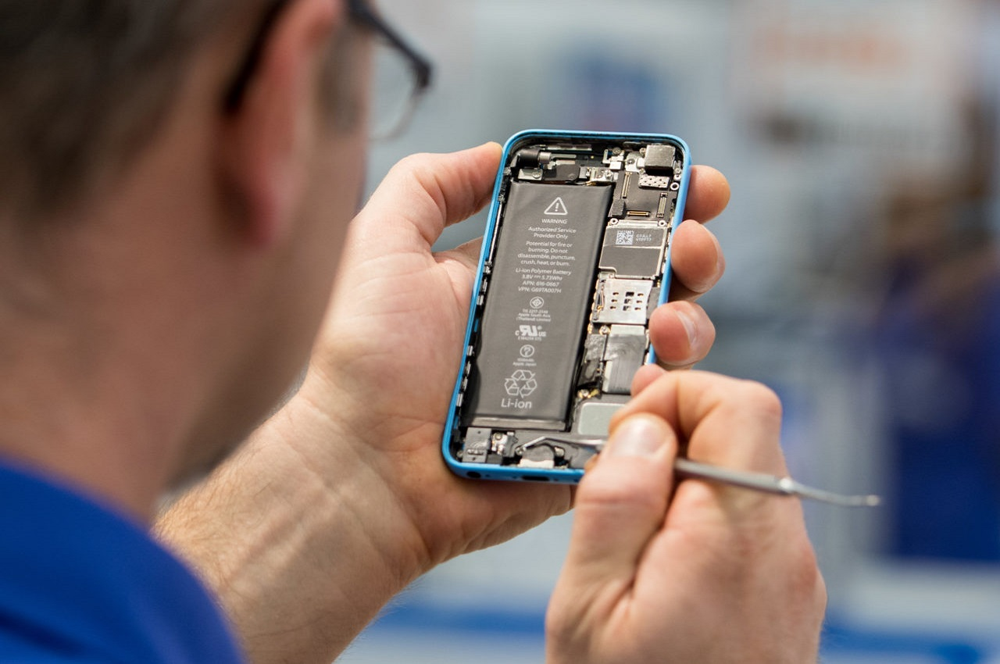

Apple permitirá que los usuarios reparen sus iPhone
Apple anunció el miércoles que comenzará a permitir que sus usuarios reparen los iPhone que le compran al gigante de Silicon Valley, una concesión considerada como una victoria para los defensores del «derecho a reparar».
Durante mucho tiempo, el fabricante de iPhone limita las reparaciones únicamente a los técnicos de «Genius bar», el servicio gratuito de sus tiendas. O a centros de servicio autorizados, donde los propietarios a menudo se encuentran con largas esperas y costosas facturas.
«Nunca pensamos que llegaría el día», escribió en un tuit @iFixit, una empresa que ofrece guías de reparación para varios dispositivos. «Hay algunas trampas. Pero nos emocionó ver a Apple admitir lo que siempre hemos sabido: todo el mundo es lo suficientemente genio para arreglar un iPhone«.
El nuevo programa de reparación de autoservicio de Apple comenzará en Estados Unidos. Se ofrecerá la venta de herramientas y piezas a quienes quieran trabajar en modelos dañados de teléfonos iPhone 12 o 13.
Inicialmente se enfocará en partes más propensas a sufrir daños, como pantallas, baterías y cámaras.
El programa se implementará en otros países durante el próximo año y se ampliará para incluir algunas computadoras Mac, anticipó la compañía.
«La creación de un mayor acceso a las piezas originales ofrece a nuestros clientes aún más opciones», explicó el director de la empresa, Jeff Williams.
«En los últimos tres años, Apple casi duplicó el número de puntos de servicio con acceso a repuestos, herramientas y capacitación originales. Ahora ofrecemos una opción para aquellos que deseen completar sus propias reparaciones».